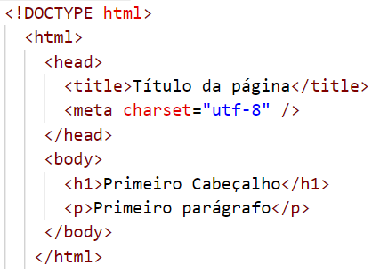

Se você está pensando em iniciar uma carreira como pessoa desenvolvedora front-end, sem dúvidas a primeira coisa que precisa aprender é a linguagem HTML. Antes de tudo, saiba que HTML não é uma linguagem de programação, mas sim uma linguagem de marcação de hipertexto. Isso quer dizer que o HTML não é capaz de criar um software, mas apenas uma estrutura para sua página web. Segundo Fernanda Bernardo, da Trybe,
"O HTML trabalha lado a lado com os navegadores da internet e os sistemas de mecanismos de busca. Depois que o código de uma página está pronto, o navegador interpreta as informações e renderiza o site visualmente de acordo com as instruções. Assim, a pessoa que acessa consegue visualizar as informações, disponíveis em forma de texto, formas, imagens e outros recursos."
Mas há um detalhe importante: a linguagem HTML possui regras de sintaxe e palavras específicas que precisam ser utilizadas para que sua página funcione corretamente. E é justamente nisso que nosso manual vai te ajudar! Aqui você vai encontrar tudo que precisa pra criar suas primeiras páginas web e montar seu portfolio. Bora lá?
Quando estiver montando sua página web com HTML, você irá utilizar alguns itens estruturais diferentes para que o navegador possa identificar e transformar o que você deseja em algo visual para o usuário. Vamos entender cada um deles a seguir.
As tags são palavras específicas, que aparecem entre os símbolos "<" e ">" e indicam qual a função daquele trecho do seu código. Uma tag pode indicar, por exemplo:
Estes são apenas alguns exemplos do que uma tag HTML pode representar. No segundo passo deste manual, você irá aprender diversas tags muito utlizadas para a construção de páginas web.
Uma informação importante sobre as tags é que elas podem ser únicas ou ter uma tag de fechamento, dependendo do elemento que ela representa. A tag de parágrafo (<p>), por exemplo, precisa de uma tag de fechamento (</p>)para indicar onde termina seu parágrafo. Já a tag de imagem (<img>) não precisa, pois é necessário apenas indicar a fonte da sua imagem.
Um elemento HTML nada mais é do que os itens presentes em sua página, ou seja, os textos, imagens, links, formulários, etc. Os elementos podem ser classificados de duas formas:
Os atributos aparecem dentro das tags HTML, dando a elas certas características e funcionalidades. Uma tag <a>, por exemplo, que é utilizada para links, possui o atributo "href", que irá definir qual o destino ao clicar naquele link.
Os atributos podem ser globais, quando funcionam da mesma forma para todas as tags, ou podem ser específicos de um certo elemento.
Agora que você já sabe os itens que constituem a estrutura de um código HTML, chegou a hora de aumentar seu vocabulário! A seguir, você verá as principais tags que usará para criar suas páginas web.
| Tags mais usadas | |
|---|---|
| <section></section> | Define seções, separando conteúdos como capítulos, artigos ou cabeçalhos. |
| <div></div> | Funciona como um contêiner e define um bloco inteiro de conteúdo, ajudando a organizar os elementos na página web. |
| <h1></h1> | Define um título no documento. Pode ir de h1 até h6. |
| <p></p> | Define um parágrafo. |
| <b></b> | Coloca em negrito o texto entre as tags. |
| <u></u> | Sublinha o texto entre as tags. |
| <i></i> | Coloca em itálico o texto entre as tags. |
| <br></br> | Quebra uma linha do texto. |
| <a></a> | Cria um link. Sempre acompanhada do atributo "href", que indica o destino do link. |
| <nav></nav> | Cria uma seção com um grupo de links. Muito utilizada para criar menus. |
| <img> | Permite inserir uma imagem na página. |
| <audio> | Permite inserir um áudio na página. |
| <video> | Permite inserir um vídeo na página. |
| <ol></ol> | Cria uma lista ordenada, ou seja, com números. |
| <ul></ul> | Cria uma lista não ordenada, ou seja, com marcadores. |
| <table></table> | Cria uma tabela. Dentro desta tag, serão utilizadas outras tags, que dividirão a tabela em cabeçalho (<thead></thead>), corpo (<tbody></tbody>) e rodapé (<tfoot></tfoot>). Dentro destas, ainda utilizamos as tags <tr></tr> para criar linhas, e dentro de cada linha a tag <td></td> para definir o conteúdo de cada célula. |
Chegou a hora de montar nossa página web! Independentemente da página que você quiser criar, ela deverá ter alguns elementos que são padrão da linguagem.
Vamos entender cada um dos elementos da imagem acima.
Apesar dos símbolos de "< >", esta não é uma tag, mas sim uma declaração que informa ao navegador qual a versão do HTML utilizada no arquivo. A versão mais atual é a HTML5.
Essa tag faz com que o navegador entenda que esse é um documento HTML. Todos os elementos da sua página devem ficar dentro desta tag, para que o navegador consiga interpretar o conteúdo corretamente. Dentro da tag <html>, o conteúdo será dividido entre o cabeçalho e o corpo.
É o cabeçalho da sua página. Dentro desta tag, serão definidos os metadados da página, ou seja, as informações que geralmente não aparecem para o usuário final.
Esta tag é usada para definir o título da página, que aparecerá no topo da janela, lá na aba do navegador. Ela fica sempre dentro da tag <head>.
A tag meta é usada para definir as informações dos metadados. No caso do charset, é o que define a codificação que será usada na página. Toda vez que você fizer uma página e no lugar de acentos e alguns caracteres aparecem caracteres estranhos, você provavelmente está esquecendo de definir a codificação para UTF-8.
Dentro dessa tag está todo o conteúdo do corpo da página, que é o que aparece para o usuário final, como os títulos, parágrafos, imagens, etc.
Parabéns! Você já deu seus primeiros passos rumo a uma carreira promissora. Mas a jornada está apenas começando... Trabalhar com programação é estar constantemente estudando e evoluindo, pois as tecnologias não param de ser atualizadas, e uma boa pessoa programadora sabe que não pode ficar pra trás.
Felizmente, a comunidade de TI é forte e ativa, e você pode encontrar todo tipo de informação que precisa na internet. Dando um google, você encontra diversos artigos, fóruns, vídeos e até códigos de exemplo para esclarecer suas dúvidas e ajudar a resolver problemas que encontrar no caminho.
Mas tome cuidado para não ficar 100% dependente disso! A diferença entre uma pessoa programadora iniciante e uma já consolidada na área é a sua capacidade de escrever códigos de maneira rápida e sucinta, e isso só acontece com muito estudo e dedicação.
A melhor forma de estudar é colocando a mão na massa. Crie suas próprias páginas, teste elementos diversos, e busque conhecer outras tecnologias importantes para a web, como o CSS e o Javascript.
Pra te dar um empurrãozinho, dá uma olhada nestes links:
Com tudo que você viu aqui, pode ter certeza que já está pronta(o) pra começar a aventura. Boa sorte!
KELLY, Gleiciane. Comandos e tags HTML: confira os principais e mais usados! Disponível em: https://blog.betrybe.com/html/#7. Acesso em: 29/12/2022.
KELLY, Gleiciane. HTML: tudo que você precisa saber sobre o assunto! Disponível em: https://blog.betrybe.com/desenvolvimento-web/comandos-e-tags-html/. Acesso em: 29/12/2022.